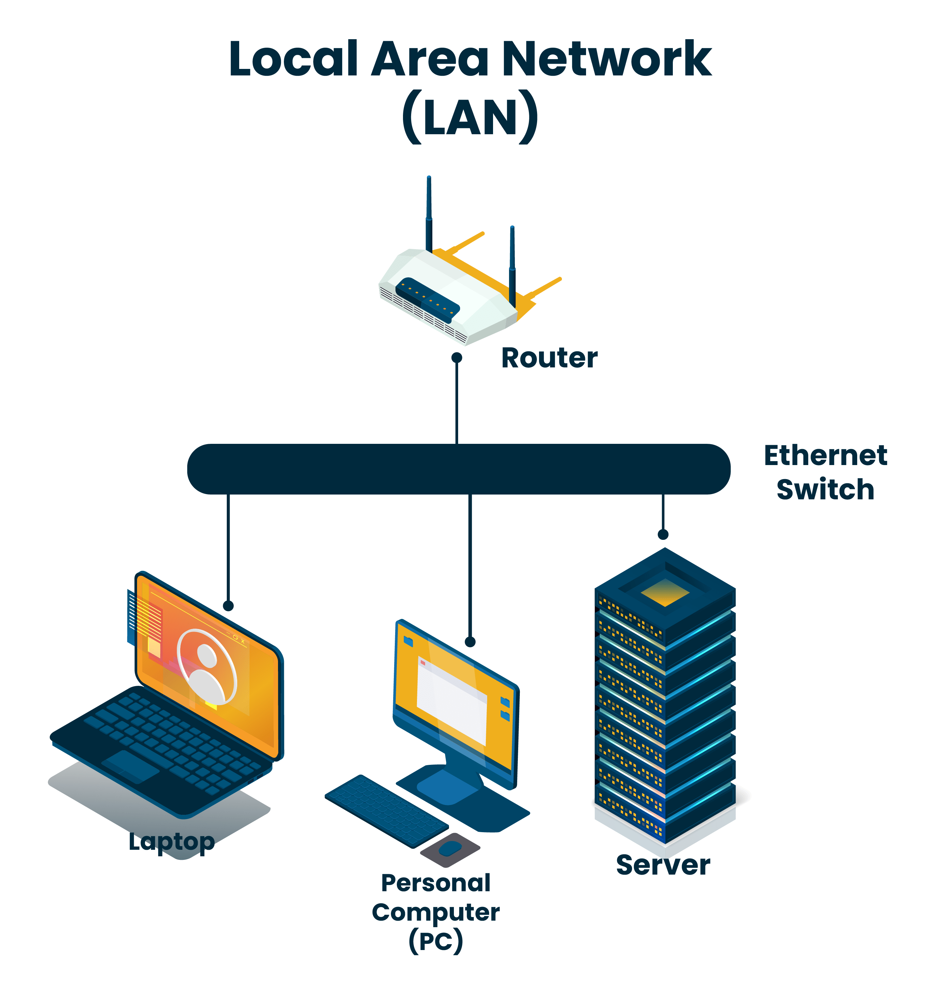
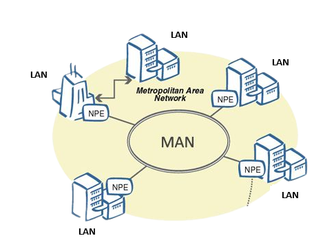

Pengertian Lan,Man, Dan Wan
Local Area Network (LAN) adalah suatu jaringan komputer yang hanya mencakup wilayah lokal saja. Artinya, jaringan ini hanya dapat digunakan oleh pengguna di area LAN. LAN menghubungkan perangkat ke jaringan internet melalui perangkat jaringan sederhana. Dalam jaringan LAN biasanya ditemukan kabel UTP, Hub, Switch, maupun Router. Contoh dari jaringan ini adalah komputer-komputer di sekolah, perusahaan, atau warung internet. Jaringan pada area yang terbatas tersebut biasanya merupakan jaringan LAN. Sebagai jaringan dengan area lokal, LAN mempunyai beberapa karakteristik yang mudah untuk diidentifikasi. Berikut adalah beberapa di antaranya: 1. Tidak menggunakan jaringan telekomunikasi dari operator tambahan. 2. Jaringan LAN biasanya digunakan untuk kepentingan pribadi. 3. Administrasi pada jaringan LAN dilakukan melalui administrasi lokal. 4. Di dalam jaringan LAN biasanya terdapat satu komputer yang berfungsi sebagai server yang bertugas untuk mengatur sistem agar berjalan normal.
1. Menghubungkan 2 Komputer atau Lebih. 2. Memindahkan File dari Satu Komputer ke Komputer Lainnya. 3. Sharing Printer. 4. LAN Chatting. 5. Remote Komputer.
LAN hanya mencakup area yang kecil. Dengan cakupannya ini, tentu LAN mempunyai kelebihan dan kekurangan tersendiri. Berikut adalah kelebihan dan kekurangan dari LAN.
1. Karena jangkauannya yang hanya mencakup area kecil, LAN tidak akan menguras terlalu banyak biaya. Selain itu, kabel yang digunakan pun tidak terlalu panjang. Ini akan lebih menghemat biaya. 2. Melalui LAN, koneksi transfer data antar node akan berlangsung dengan cepat. 3. Jaringan LAN tidak membutuhkan operator telekomunikasi untuk dapat membuat jaringan.
Luas wilayah koneksi terbatas. Hal ini karena LAN hanya mencakup area lokal saja.
Metropolitan Area Network (MAN) adalah suatu jaringan komputer yang dapat mencakup area yang lebih luas dan menggunakan teknologi yang lebih canggih dari LAN. Jaringan MAN merupakan gabungan beberapa jaringan LAN yang mana menjangkau hingga 10 s.d. 50 km. Jaringan MAN cocok dipakai untuk membangun jaringan antar perkantoran atau instansi yang masih dalam satu kota. Biasanya MAN dipakai untuk menghubungkan beberapa lokasi seperti perkantoran, kampus, pemerintahan, dan sebagainya. MAN digunakan karena kecepatan transfer data yang dinilai tinggi dan proses instalasi yang tidak terlalu rumit. Di dalam MAN, dibutuhkan operator telekomunikasi yang akan menjadi penghubung antar jaringan komputer. MAN sendiri mempunyai karakteristik sebagai berikut: 1. Meliputi area yang lebih luas dari LAN, yakni 10 sampai 50 km. 2. Sebuah MAN umumnya tidak dimiliki oleh satu organisasi. MAN umumnya dimiliki oleh salah satu konsorsium pengguna atau oleh penyedia layanan jaringan yang menyediakan pelayanan kepada pengguna. 3. MAN bertindak sebagai jaringan berkecepatan tinggi sehingga memungkinkan untuk berbagi sumber daya daerah. Hal ini pun sering digunakan untuk menyediakan koneksi bersama. 4. Sekalipun MAN lebih besar dari LAN, teknologi yang dipakai biasanya sama dengan LAN. 5. MAN hanya memiliki sebuah atau dua buah kabel dan tidak memiliki elemen switching yang berfungsi untuk mengatur paket melalui beberapa output
Jaringan MAN mempunyai fungsi untuk memenuhi kebutuhan internet pada sebuah perusahaan. MAN akan mempermudah pembagian dan penerimaan data maupun informasi. Terlebih lagi pemusatan data pada MAN akan lebih mudah dilakukan. Melalui jaringan MAN, sebuah perusahaan dapat melakukan kegiatan bertukar informasi baik melalui Video Conference, Email, maupun chat yang dilakukan secara real time dengan memakai bandwith lokal.
Jaringan man mempunyai plus minus tersendiri. Berlkut ini adalah kelebihan dan kekurangan jaringan Metropolitan Area Network atau MAN.
1. MAN mempunyai area jangkauan yang lebih luas dibandingkan LAN. Hal ini karena MAN dapat mencakup lingkup satu kota. Hal ini membuat komunikasi dengan jaringan MAN menjadi lebih efisien. 2. Jaringan MAN dipakai untuk mempermudah urusan bisnis. Keamanan berkomunikasi dengan jaringan MAN pun juga dinilai lebih terjaga. 3. Memiliki kecepatan transfer data yang tinggi.
1. Jaringan MAN sangat mungkin untuk sirsak oleh orang yang tidak bertanggung jawab demi keuntungan pribadi atau tujuan lainnya. 2. Apabila terjadi kerusakan pada jaringan MAN, waktu yang diperlukan untuk memperbaikinya akan cukup lama.

Wide Area Network (WAN) adalah jaringan komputer yang luas cakupannya dapat mencapai satu negara bahkan benua. Jaringan ini merupakan gabungan dari LAN dan MAN yang wilayahnya dipisahkan secara geografis. Membangun jaringan WAN membutuhkan kabel serat optik (fiber optic), kabel telepon, atau bisa juga menggunakan satelit. Oleh karena jangkauannya yang luas, membuat WAN memerlukan biaya yang sangat besar. WAN mempunyai transmisi kecepatan mulai dari 2 Mbps, 34 Mbps, 45 Mbps, 155 Mbps, 625 Mbps atau bahkan lebih. Faktor yang menjadi pengaruh design dan performa jaringan ini ada pada siklus komunikasi semacam jaringan telepon atau satelit. Jaringan WAN mempunyai karakteristik tersendiri, yaitu sebagai berikut: 1. Umumnya digunakan untuk menghubungkan perangkat-perangkat yang tidak dapat dihubungkan melalui jaringan LAN maupun MAN. Hal ini membuat WAN dapat digunakan secara luas. 2. Area jangkauan WAN sangat luas. Oleh karena itu, biasanya dalam WAN akan melibatkan operator telekomunikasi. Tujuannya adalah agar perangkat-perangkat dalam jaringan WAN dapat melakukan komunikasi satu sama lain. 3. Jaringan WAN dapat melakukan pertukaran paket data atau frame antar router atau switch dan jaringan LAN yang sudah dibangun. 4. Jaringan WAN ini bekerja pada layer fisik dan pada layer data link dari layer OSI.
1. Membuat Arus Komunikasi Menjadi Lebih Mudah dan Cepat 2. Mengintegrasikan Jaringan Lan dan Man 3. Menghemat Biaya Operasional 4. Pengiriman Data yang Cepat 5. Terhindar Dari Miskomunikasi
Sebagai jaringan komputer dengan skala luas, tentu WAN tidak lepas dari kelebihan dan kekurangan. Berikut dijelaskan kelebihan dan kekurangan WAN secara umum
1. WAN memungkinkan pengguna untuk berbagi informasi atau file melalui area yang lebih besar, hingga mencapai antar benua. 2. Semua orang yang terdapat pada jaringan WAN akan dapat menggunakan data yang sama. 3. WAN mempunyai sistem jaringan yang luas dan besar sehingga mampu menjangkau negara, benua, bahkan seluruh dunia. 4. Dengan memanfaatkan koneksi workstations, jaringan WAN dapat digunakan untuk berbagi resources atau sumber daya.
1. Karena jangkauannya yang sangat luas, sangat wajar jika WAN membutuhkan biaya operasional yang sangat tidak sedikit. 2. Dari segi pengaturan atau penyetingan, jaringan WAN lebih sulit dan rumit. Alat-alat yang diperlukan untuk membangun jaringan ini juga tidak murah. 3. Jaringan WAN membutuhkan keberadaan Firewall demi membatasi pengguna ilegal yang masuk. Selain itu, langkah ini juga bertujuan untuk membatasi user yang ingin mengganggu jaringan. 4. Skala jangkauan jaringan WAN yang luas membuat jaringan ini rentan terhadap serangan dan ancaman dari dunia luar seperti hacker.
SUMBER:
dataglobal.co.id